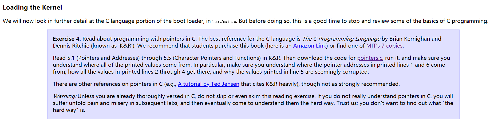
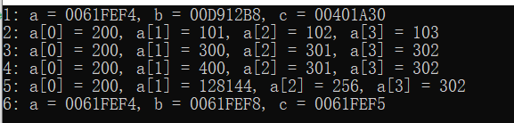
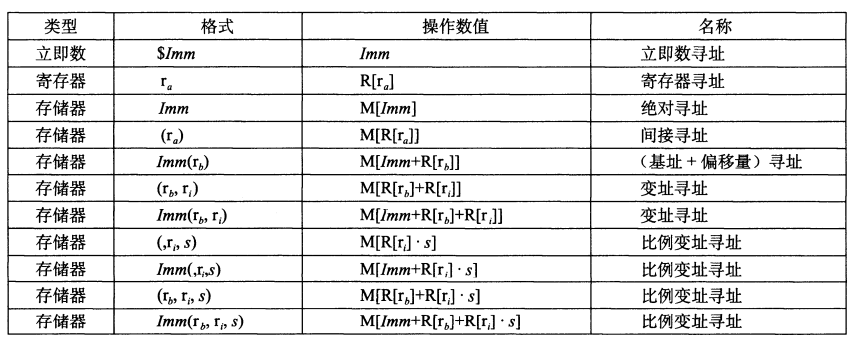
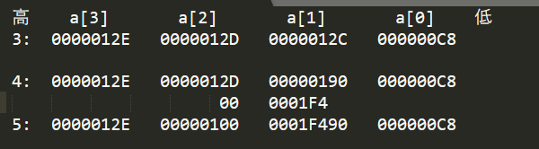
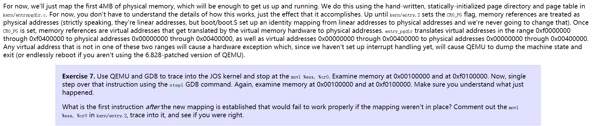
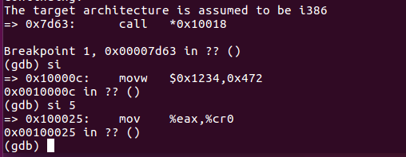
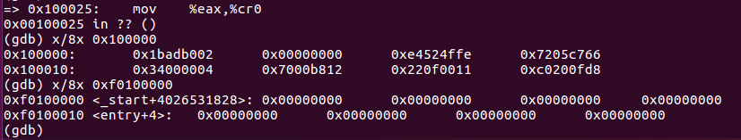
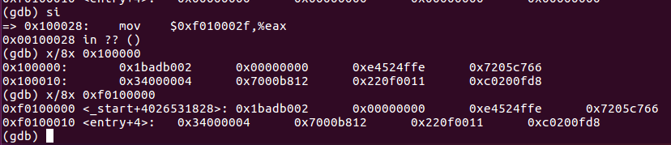

MIT 6.828 Lab1
MIT6.828 Lab1 Part2 pointers
实验中有一部分要求我们复习C语言基础，主要是指针方面的知识：

我们需要做的工作就是运行官方所给的pointers.c文件，然后弄明白每次数据a中的元素都是什么
1 | #include <stdio.h> |
首先看一下运行结果，然后逐句分析一下：

代码首先定义了四个变量，然后打印前三个变量的地址
1 | int a[4]; |
系统在分配地址的时候有其自己的算法，所以这三个地址我们是无法预估的
1 | c = a; |
第二部分将a的地址赋值给c，此时对c和a的操作都相当于对a的操作，所以打印a数组的时候会显示
1 | 200 101 102 103 |
接下来第三部分
1 | c[1] = 300;` |
这部分考察的是寻址方式，这部分可以参考csapp（深入理解计算机系统）的第三章121页，里面讲了寻址方式

实际操作都是对于数据a的操作，所以打印出的内容为
1 | 200 300 301 302 |
再接着：
1 | c = c + 1; |
我们都知道，c是一个int *型的指针变量,所以执行c=c+1就相当于c的地址向后移位一个整型数字的大小，所以此时c所指向的地址为a[1]的地址，对c的操作就相当于对a[1]的操作，所以第四次打印较第三次来说只有a[1]的值发生了变化
1 | 200 400 301 302 |
然后是第五次打印
1 | c = (int *) ((char *) c + 1); |
这次非常特别的将c的地址转换成字符型加一然后又转换成整型，此时c指向的地址即不是a[1]又不是a[2]，而是a[1]和a[2]之间的位置，在这个时候写入500，那么肯定会导致a[1] a[2]的值都发生变化，如下图所示：

首先观察3和4，我们需要知道的是我们的编译环境是32位的，所以一个整数占32位，然后是该系统采用小端模式，高地址在前，低地址在后，所以我们在写入数据的时候也是从高地址写入低地址
1 | 500用十六进制表示为：0x000001F4 |
c的地址原来指向a[1]，向后移位一个字符后则指向$a[1]+8bit大小，所以向C写入500时我们要将前8位写入a[2]的后8位，把500的后24位写入a[1]的前24位，如上图所示，所以写入后显示如下数字
：
1 | 200 128144 256 302 |
最后一次打印，有了前面的介绍我们可以知道b的地址在a[0]的地址向后移位一个整型的大小，即32位，而c的位置为a[0]向后移位一个字符型的大小，8位。打印的内容如下所示：
1 | 0061FEF4 0061FEF8 0061FEF5 |
其他具体的介绍也可以参考视频链接
MIT6.828 Lab1 Part3:The Kernel

第一部分与虚拟内存映射有关联，主要表述的内容为：
- 我们的操作系统使用了4MB的物理内存
- 观察kern/entry.s文件可以得到，设置CR0_PG标志位之后就可以进行虚拟内存映射
- 具体的映射方式为高地址0xf0000000 - 0xf0400000的4MB物理地址映射到0x00000000 - 0x00400000，物理地址0x00000000~0x00400000依旧映射到0x00000000 - 0x00400000
要求我们验证CR0_PG标志位设置前后0x100000与0xf0100000两处物理地址存储的内容：
分析一下，根据我们的映射方式，0xf0100000与0x100000对应一个地址，所以在进行映射之前两者对应的内存不同，映射之后对应的内存相同
entry.s中有一句
movl %eax, %cr0
此句的作用就是设置CRO_PG，所以我们使用qemu和gdb定位到此句，查看执行前后两段内存中对应的内容即可
下面开始进行操作：
首先我们需要找到上面的代码，我们的代码在执行过bootmain之后跳转到entry函数的执行，所以我们只需要在bootmain的最后一行一句一句向后执行就能找到

我们可以看到，该代码在0x00100025，此时是不能进行地址映射的，所以查看内存如下：

可以看到两个位置所存储的内容不同，使用si指令向下执行之后再次查看内存

可以看到设置好CR0_PG之后确实可以进行地址映射